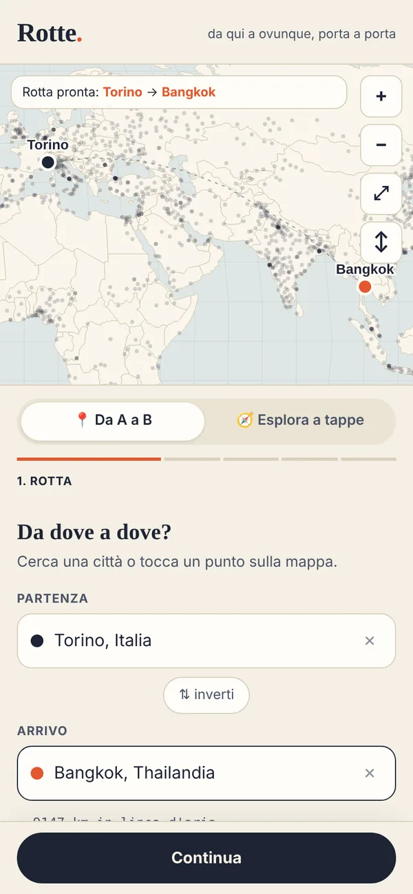
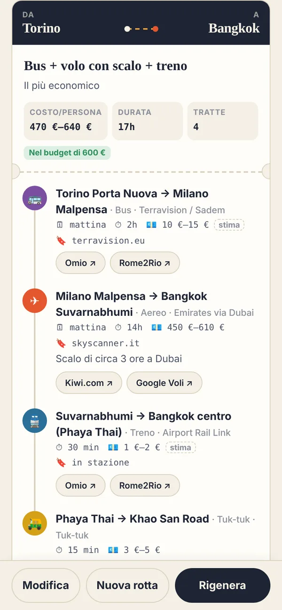
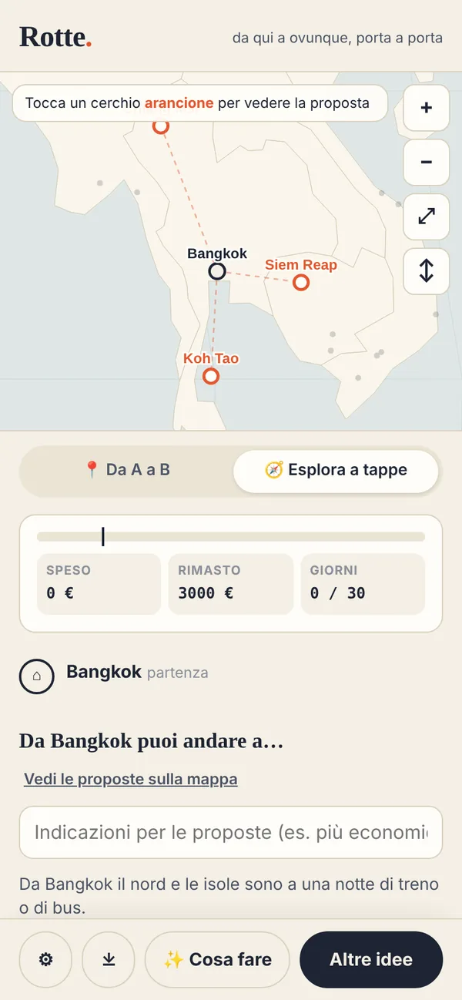
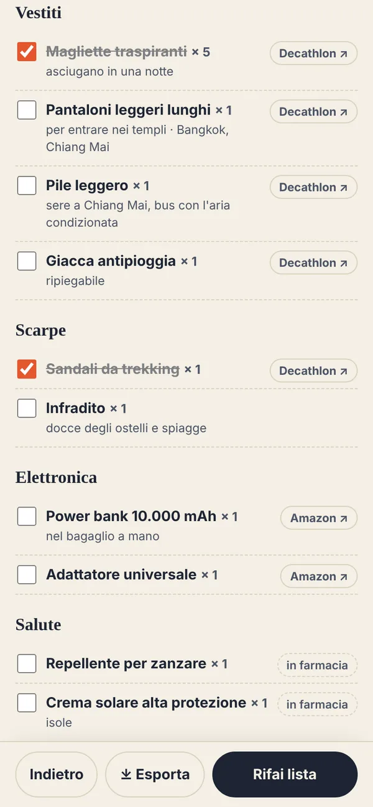

Planner di viaggi multimodali
Da qui a ovunque, porta a porta.
Scegli due punti nel mondo, dimmi come vuoi viaggiare e quanto vuoi spendere. Rotte ti dà ogni singolo spostamento: aerei, treni, bus, traghetti, fino al minibus e al tuk-tuk dell'ultimo chilometro.
Gratis, su invito. Funziona dentro Claude: serve un account Claude (va bene quello gratuito) e un invito di Alessio. Come si fa
- 🚇Torino centro → Porta NuovaMetro GTT · 15 min2 €
- 🚌Torino → Milano MalpensaBus · 2 h8–15 €
- ✈︎Malpensa → Città del CapoVolo con scalo · 1 g390–520 €
- 🚐Aeroporto → centro cittàNavetta pubblica · 40 min6–8 €
Guardala in azione
Da Torino a Bangkok in mezzo minuto: partenza e arrivo, stile di viaggio, l'itinerario con ogni tratta e la lista di cosa portare. Dati di esempio.

Scegli la rottaDue punti qualsiasi nel mondo. 
Ogni trattaMezzo, durata, costo e dove prenotare. 
Esplora a tappeScegli dove andare dopo, col budget. 
Cosa portareLa lista per tutto il viaggio.
Come funziona
Tre passaggi, un itinerario completo. Ti propone tre opzioni da confrontare, con il percorso disegnato sulla mappa.
Scegli partenza e arrivo
Cerca una città o tocca un punto sulla mappa del mondo.
Dimmi come vuoi viaggiare
Il più veloce, il più economico o quello più avventuroso, via terra e via mare dove si può.
Date e budget
Date esatte, flessibili o a sorpresa, e quanto vuoi spendere. Ricevi tutte le tratte con costi, durate e dove prenotare.
Cosa trovi dentro
Pensata per chi viaggia spendendo il giusto e vuole sapere esattamente come arrivare, non solo dove.
Da A a B, porta a porta
Ogni spostamento, dal taxi per l'aeroporto al traghetto, con prezzi indicativi e link per prenotare.
Esplora a tappe
Non sai ancora dove finire? Parti, scegli la tappa successiva tra quelle che il budget ti permette, e così via.
Cosa fare
Per ogni meta, le cose da non perdere e quelle fuori dai soliti giri: luoghi strani, cibo locale, tradizioni.
Trasporti locali
Minibus, taxi collettivi, tuk-tuk e mototaxi: come si chiamano, quanto costano e come si pagano.
Visti e documenti
Per ogni paese, anche negli scali, cosa serve per entrare con il tuo passaporto.
Porta il viaggio con te
Esporta l'itinerario come pagina da stampare, testo o calendario da importare in Google Calendar.
Guida per iniziare
La prima volta servono un paio di minuti, più il tempo dell'invito. Segui questi passaggi e al primo tentativo hai il tuo itinerario.
Crea un account Claude (gratis)
Rotte funziona dentro Claude. Se non hai ancora un account, crealo su claude.ai con la tua email o con Google: va bene quello gratuito. Se ce l'hai già, salta questo passaggio.
Chiedi l'invito
Per ora Rotte è su invito. Manda ad Alessio l'email con cui accedi a Claude: ti aggiunge lui e ti arriva una notifica. Senza invito la pagina si apre, ma non crea itinerari.
Chiedi l'invito ↗Oppure scrivi ad alessiorandazzo259@gmail.com.
Apri Rotte
Dopo l'invito, apri Rotte dal pulsante qui sotto, con lo stesso account Claude. Alla prima apertura trovi una breve presentazione, chiudila con Ho capito, iniziamo.
Apri Rotte ↗Prepara il primo viaggio
In 📍 Da A a B scrivi la partenza e l'arrivo, oppure tocca la mappa. Scegli lo stile (veloce, economico o avventuroso), le date e il budget, poi premi Trova il percorso →.
Per provare subito: Torino → Lisbona, economico, date flessibili.
Dai il permesso a Claude
La prima volta Claude ti chiede se Rotte può usarlo per preparare l'itinerario: accetta. È il tuo account Claude a fare il lavoro, per questo l'app è gratis.
Confronta le proposte
Ricevi tre opzioni con tutte le tratte, i tempi e i costi. Con Vedi le proposte sulla mappa guardi il percorso; ogni tratta ha il link per controllare il prezzo e prenotare.
Il resto da scoprire
🧭 Esplora a tappe se non sai ancora dove finire, ✨ Cosa fare per le esperienze in ogni meta, ⤓ Esporta per stampare il viaggio o metterlo nel calendario.
Sul telefono: apri Rotte nel browser, poi “Aggiungi a schermata Home” per ritrovarla come un'app.
Dimmi com'è andata
Rotte è appena nata e la sto migliorando con chi la prova. Dopo averla usata, rispondi a un questionario di 2 minuti: anonimo, e le critiche sono le più utili.
Perché serve un account Claude
Rotte è costruita su Claude, l'assistente di Anthropic. Gli itinerari li prepara il tuo Claude, con il tuo account: per questo l'app è gratis e non chiede iscrizioni.
- Va bene anche l'account Claude gratuito.
- Per ora si entra su invito: chiedilo ad Alessio con l'email del tuo account Claude.
- Alla prima richiesta Claude ti chiede il permesso.
- I tuoi viaggi restano salvati solo nel tuo browser.
Domande frequenti
È gratis?
Sì. Rotte non costa nulla. Se prenoti da alcuni link presenti nell'app, Rotte può ricevere una piccola commissione dal sito di prenotazione, senza nessun costo aggiuntivo per te.
I prezzi sono quelli veri?
Sono stime basate sulle tariffe tipiche del periodo. Prima di prenotare controlla sempre il prezzo aggiornato sul sito collegato a ogni tratta.
Devo installare qualcosa?
No. Si apre nel browser o nell'app Claude. Sul telefono puoi aggiungerla alla schermata Home per ritrovarla come un'app.
Le informazioni sui visti sono affidabili?
Sono indicazioni di massima. Prima di partire verifica sempre su viaggiaresicuri.it e sul sito dell'ambasciata del paese di destinazione.
Questo sito usa cookie?
Solo se li accetti. Con il tuo consenso carichiamo uno strumento di Travelpayouts che misura i clic sui link di viaggio e riconosce le prenotazioni fatte tramite i link di affiliazione. Se rifiuti, il sito funziona lo stesso e non viene caricato nulla. Puoi cambiare scelta quando vuoi: . Tutti i dettagli nella pagina Privacy e cookie.
Chi vede i miei viaggi?
Nessuno. I viaggi che crei si salvano nel tuo browser. Gli itinerari li genera il tuo account Claude, secondo le sue condizioni d'uso.
Trasparenza: alcuni link di prenotazione presenti in Rotte sono link di affiliazione. Se prenoti tramite questi link, Rotte riceve una commissione dal sito partner; il prezzo per te non cambia. Prezzi, orari e requisiti di ingresso sono indicativi. Rotte è un progetto indipendente e non è affiliato ad Anthropic.